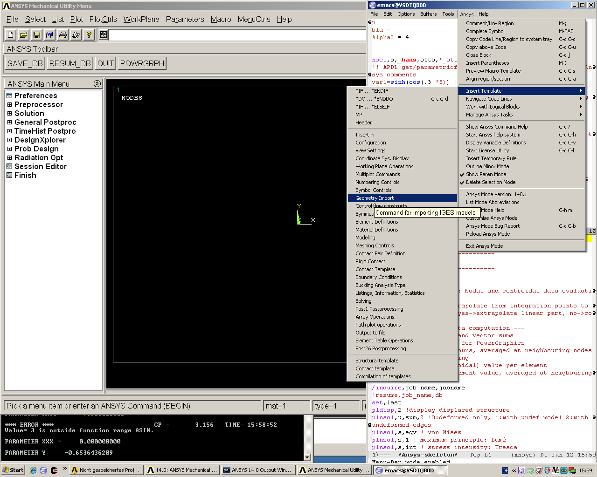

This is ANSYS-Mode's README file
Table of Contents
It is best read in Emacs's Org mode.
Copyright (C) 2006 - 2015 H. Dieter Wilhelm, GPL V3
1 Introduction
This project supports your workflows with the FEA (Finite Element Analysis) suite ANSYS (ANalysis SYStem, registered TM).
It provides `ANSYS-Mode', an add-on to the GNU Emacs editor for investigating and coding APDL (Ansys Parametric Design Language). The mode offers also managing and communication capabilities for various ANSYS processes, like interactive code debugging with the solver or inquiring the license manager status, etc. Some features are quite sophisticated but its documentation is targeted for ANSYS users with little Emacs experience.
Advantages compared to other APDL editors: Largest feature set, user extensible, cost-free, GNU Emacs integrated tools, available for all OS, for the mode's in-built APDL help no ANSYS installation necessary.
GNU (Gnu's Not Unix) Emacs is an up-to-date, powerful and extensible - yet free - editor. High quality software available for every operating system where ANSYS is running.
Ansys-Mode since version 15.0.1 is hosted on Github. The latest sources you'll find on its ANSYS-Mode project site.
The current stable version 16.1.1 of ANSYS-Mode is available at the Github releases site or at Google's ANSYS-Mode drive. There are residing 3 archive packages: 1) A package of ANSYS-Mode together with binaries of Emacs for Windows, 2) a source file package for compiling the latest stable Emacs version together with ANSYS-Mode and 3) the sources of ANSYS-Mode alone, intended for an existing Emacs installation. You might fetch these archives via the command line way, e. g. for the version of ANSYS-Mode bundled with Emacs binaries for Windows:
wget https://github.com/dieter-wilhelm/ansys-mode/releases/download/release-16.1.1/ansys-mode-16.1.1.emacs-24.5-bin-i686-mingw32.zip
Important parts of the code (completions, help strings, etc.) are based on the original ANSYS documentation. Besides source files and the Emacs editor you will find tutorials in the download section. The complete documentation of ANSYS-Mode is also online available.
Please report bugs and inconsistencies also in the documentation! Write an email to the maintainer or open a bug report in Github's issues list.
2 Example applications

Above image shows an Emacs frame (in reversed colour mode and compiled with the GTK+ toolkit under GNU-Linux) with a ripped off menu field. The APDL file is in the right window with the (experimental) user variable highlighting switched on and a help overlay (in yellow background) activated. The smaller windows on the left hand side are showing the `Variable definitions buffer' of the same file and a preview buffer of a certain code template, respectively.
Blelow is a Screenshot on Win64 with the ANSYS Classics GUI on the left and Emacs in ANSYS-Mode on the right hand side.

3 Features
- Inbuilt syntax help (similar to the ANSYS dynamic prompt), undocumented and deprecated commands are hinted as such. This syntax help counts the number of arguments and visualises your cursor position in the argument list as well.
- Opening the detailed ANSYS help in your web browser for an APDL command or element name (the element number is sufficient) at or before the cursor. Optionally you can input the desired string interactively with a completion of all valid keywords.
- ANSYS process management (viewing error files, license status, starting the ANSYS help browser, etc.).
- Solver communication facilities, i. e. sending code fragments from
the macro file or commands interactively to an ANSYS solver process
(GNU-Linux only). With abreviated input method: For the often used
command C-c C-j (
ansys-send-to-ansys-and-proceed, sending a code line to the solver and skipping to the next) it is sufficient to repeat this command just with the last input key(s) ("j" or "C-j"). - Keyword completion of ANSYS commands, elements, get- and parametric-functions (case-sensitive) of around 2000 ANSYS symbols.
- Comprehensive keyboard shortcuts for code navigation: Skipping comments, navigating number blocks, searching and creating *DO-, *IF-, *DOWHILE-, *CREATE-blocks, etc.
- Warning of deprecated element types with a different highlighting of element names in current and deprecated technology.
- Syntax highlighting in various decoration levels (complete ANSYS keywords, undocumented commands, deprecated elements, …) and optionally also user defined variables (experimental feature).
- Overview of every variable definition (*GET, *DIM, *SET, =, *DO, CM, *VGET, …), as well as component names, in the current file. These are shown in another window. In the highest decoration level (2) these `user variables' are dynamically highlighted as well. With a running ANSYS interpreter process (GNU-Linux only) it is also possible with a keyboard shortcut to query the current status of variables near the cursor.
- Preview and/or insertion of extensible APDL code templates. For example the function template shows all available ANSYS parametric- and get functions. The respective code snippets show examples of APDL work flows and considerable ANSYS know-how, these are easily extensible to boot. The templates are partly interactive i. e. they are asking for or completing user input.
- Alignment (beautification) of whole paragraphs or marked sections with variable definitions.
- Narrowing, i. e. hiding, of uninteresting content. This is done by default for number blocks (nblock, eblocks and cmblocks) in WorkBench created solver input file (with the suffix .dat). You can, in case the need arises, unhide and inspect these as well.
- Outlining (hiding and navigating) of code sections with Emacs' outline-minor-mode. With outline strings '!@' you have a heading structure which you can collapse or show. This is the textual analog to the WorkBench tree view.
- Auto-insertion (optionally) of a header and outline code for every new APDL file.
- Convenient comment handling, commenting out whole paragraphs or control blocks and rapidly removing all comments.
- Auto-indentation of looping blocks and conditional control blocks together with closing of open blocks with auto-insertion of the appropriate end keyword (case-sensitive).
- ANSYS-Mode defines abbreviations for APDL templates or other code constructs i. e. with writing a character after a special key (here: `) triggers an expansion of complete code sequences.
- You are able to use all Emacs' facilities, like the built-in calculator, file manager, image viewer and many others. ANSYS-Mode changes some Emacs default behaviour to alleviate the transition from other editors and user interface standards.
4 News
Please have a look in the NEWS file for the complete history
5 Requirements
The mode was tested with Emacs-24.5 under Win7, Cygwin and GNU-Linux64. It should also run with all older versions of Emacs down to Emacs-23.1 (realeased July 2009 and which is able to compile ANSYS-Mode 16.1).
Some of ANSYS-Mode's solver control and communication features are only implemented for GNU-Linux systems.
6 Installation
The version scheme is a mixture of the ANSYS release (currently "16.1") on which the highlighting and completing code is based and the version increments (currently ".1") of ANSYS-Mode (thus "16.1.1") for this particular ANSYS release.
6.1 Files
Sources:
- ansys-mode.el: Main file
- ansys-keyword.el: Fontification variables build from helper/ansys-fontification.el
- ansys-template.el: Template definitions
- ansys-process.el: Variables and functions related to solver processes
(and possibly their compiled versions with the suffix '.elc'. In case you are using the mode with an older version of Emacs than 24.1 please remove the compiled .elc files, if any.)
Auxiliaries:
- README.org – This file
- NEWS.org – News and history
- TODO.org – Todos and deficiencies
- LICENSE.org – The GPL (Gnu Public License) Version 3
- default.el – Configuration (example) file
- helper/example.dat – WorkBench example APDL solver input file
- helper/example.anf – ANSYS geometry neutral file example
- helper/example.mac – APDL user macro and highlighting example
- matlib/ – a directory with examples of APDL material definitions
- doc/A-Mintroductorytutorial-16.1.1.pdf – Your first look at ANSYS-Mode?
- doc/A-Min-depthtutorial-16.1.1.pdf – A hands-on ANSYS-Mode tutorial
- doc/A-Min-depthtutorial-16.1.1.ansys – Hands-on tutorial's supplementary APDL code
- doc/A-MAPDLreference-16.1.1.pdf – APDL and ANSYS-Mode syntax highlighting reference guide
6.2 Short instructions
For Windows systems:
If applicable please grab the package of a pre-compiled Emacs-24.5 (Win32/64) bundled with a preconfigured ANSYS-Mode at above Github site and unpack this archive anywhere on your system (you do not need administrator rights). You might subsequently run the program addpm.exe (located in the bin\ directory) to add an Emacs entry to the Windows start menu (please refer to the README.W32 file) otherwise start the Emacs executable runemacs.exe from there.
ANSYS-Mode is now immediately available, by opening (check out `example.mac') or by creating a new APDL file with a `.mac' suffix. Have fun!
Most functionalities should work out of the box, but if you have NOT installed ANSYS in its default installation directory on drive `C:Program Files' on Win64 and you want to start–for example–'anslicadmin' or the ANSYS help browser directly from Emacs please adjust the configuration file `default.el' file in Emacs' `site-lisp' directory according to the commented code examples. If you are using your own configuration file, please remember that it is loaded before `default.el'; this means that ANSYS-Mode settings done by Emacs' customisation system or written in your configuration file might be overwritten by `default.el'. If you remove `default.el' or set 'inhibit-default-ini' to non-nil in your own init file, then default.el is not loaded any longer.
In case you want to download or have already installed the original version of GNU Emacs, you can also download and configure the ANSYS-Mode package separately. Please refer to below instructions.
For existing Emacs installations on Windows and GNU-Linux:
6.2.1 Direct way; no file configuration necessary
Important prerequisite: Emacs must know where all the code (.el or its compiled versions .elc) files reside! Extract the mode archive into an Emacs directory which is in its default load-path (a good place is the `site-lisp' folder in your Emacs installation tree) or indicate the directory with the environment variable EMACSLOADPATH).
From there on you must load first the mode definitions with `M-x load-file ansys-mode RET', i. e. typing "M-x" (first) the <Alt> key and then the <x> key simultaneously, you'll end up in the so called Emacs minibuffer prompt, now type "load-file" (you might apply the <TAB> key for the Emacs auto-completion feature at every intermediate stage) and conclude this input with the <RET> key. Emacs will then prompt you for a file, type in the directory where you have extracted the code and "ansys-mode.el" (or "ansys-mode.elc" - for loading speed reasons - if the compiled version is available) and press RET to execute the loading. Thereafter call the mode itself with `M-x ansys-mode RET' for every new or existing APDL file.
6.2.2 More convenient way; file configuration necessary
Extract the files somewhere on disc and put the following paragraph into your `~/.emacs' or `~/.emacs.el' or `~/.emacs.d/init.el' configuration file in your home directory (`~'), which is determined by the environment variable HOME (on both Windows and Unix), adjust the stuff below in capital letters, restart Emacs and ansys-mode will be automatically applied for all files with suffixes `.mac', `.dat' and `.inp'.
(add-to-list 'load-path "C:\\DIRECTORY-PATH\\WHERE\\THE\\ANSYS-MODE\\FILES\\RESIDE") ;; assuming you extracted the files on drive "c:" ;; for example: "c:\\emacs-24.5\\share\\emacs\\24.5\\site-lisp\\ansys-mode" ;; .mac is the macro suffix of ANSYS i. e. these macros can be called ;; in the ANSYS command prompt like a regular ANSYS function (without ;; the suffix .mac) (add-to-list 'auto-mode-alist '("\\.mac\\'" . ansys-mode)) ;; .dat and .inp are WorkBench's solver input file suffixes (add-to-list 'auto-mode-alist '("\\.dat\\'" . ansys-mode)) (add-to-list 'auto-mode-alist '("\\.inp\\'" . ansys-mode)) ;; .anf is the suffix for "ANSYS Neutral" files which include mostly ;; gometric data but also some APDL snippets. (add-to-list 'auto-mode-alist '("\\.anf$" . ansys-mode)) (autoload 'ansys-mode "ansys-mode" nil t)
6.3 Verbose instructions
- Direct way, no configuration necessary (loading `by hand')
Please consult the `direct way' description above.
If you are unfamiliar by these concepts I suggest working through the build-in tutorial of GNU Emacs (you'll find it in the help entry in the menu bar), it doesn't take too much time and the investment will be worth it since it will accelerate your general editing capabilities in the future.
- Permanent configuration
Please have a look at the accompanying `default.el' customisation example. It can be used as a configuration file (after moving it e. g. to `/usr/share/emacs/site-lisp' or `c:\\EMACSINSTALLDIR\\site-lisp', hint: The directory site-lisp/ in the Emacs installation tree is in its default load-path). Yet `default.el' is loaded AFTER your personal Emacs configuration file (if there is any) `~/.emacs' (or `~/.emacs.d/init.el')! If you intend to change the following settings with Emacs' customisation system or changing them directly in your personal configuration file, you must either set the variable `inhibit-default-ini' to `t' "(setq inhibit-default-ini t)" in your personal configuration file or remove `default.el' otherwise your settings might be overwritten!
If the ANSYS-Mode files (*.el) are NOT placed in a default Emacs load-path it is necessary to adjust the following variable.
(add-to-list 'load-path
"C:\\YOUR\\DIRECTORY\\WHERE\\MODE\\FILES\\RECIDE")
For example: "c:\\emacs\\ansys-mode" on a Windows system or "/usr/local/src/emacs/ansys-mode" on a GNU-Linux system.
(autoload 'ansys-mode "ansys-mode" "Activate ANSYS-Mode." 'interactive)
From here you are able to type "M-x ansys-mode RET" to activate the mode for every interesting file.
- Automatic mode assignment
When you intend to apply the mode automatically, for all files with the extensions `.mac', `.dat', `.inp' and `.anf' ( .dat and .inp are WorkBench's solver input file suffixes) you are opening, add the following to your `.emacs' file:
(add-to-list 'auto-mode-alist '("\\.mac$" . ansys-mode)) (add-to-list 'auto-mode-alist '("\\.dat$" . ansys-mode)) (add-to-list 'auto-mode-alist '("\\.inp$" . ansys-mode)) ;; this is the suffix for "ANSYS Neutral Files" which include some APDL. (add-to-list 'auto-mode-alist '("\\.anf$" . ansys-mode))
The suffix below belongs to the `anys neutral file' export format which contains also an APDL header and footer.
(add-to-list 'auto-mode-alist '("\\.anf$" . ansys-mode))
- Auto-insertion of code
In case you also want to enjoy the auto insertion feature, which puts (optionally) some predefined body of ANSYS commands to every new APDL file insert the following into '.emacs':
(setq auto-insert-mode 1) (setq auto-insert-query t) ;insert only after request (add-to-list 'auto-insert-alist '(ansys-mode . [ansys-skeleton-compilation]))
- Auto-loading of helper functions
With below section you are also able to use certain ANSYS related commands in a new Emacs session without the need of previously having explicitly called ansys-mode.
(autoload 'ansys-customise-ansys "ansys-mode" "Activate the function for calling a special ANSYS customisation buffer." 'interactive) (autoload 'ansys-abort-file "ansys-mode" "Activate the function for aborting ANSYS runs." 'interactive) (autoload 'ansys-display-error-file "ansys-mode" "Activate the function for inspecting the ANSYS error file." 'interactive) (autoload 'ansys-start-ansys-help "ansys-mode" "Activate the function for starting the ANSYS help browser." 'interactive) (autoload 'ansys-start-ansys "ansys-mode" "Activate the function for starting the APDL interpreter under GNU-Linux or product launcher under Windows." 'interactive) (autoload 'ansys-license-status "ansys-mode" "Activate the function for displaying ANSYS license status or starting a license utility." 'interactive)
6.4 Compiling Emacs under Linux
cd emacs-24.5/
./configure
make
6.4.1 RHEL (6)
- Required libraries
- ncurses-devel.x8664
- gtk2-devel.x8664 (libgtk under Debian)
sudo yum install ncurses-devel.x86_64 ...
- Optional libraries
Graphics support
- libjpeg-devel.x8664
- giflib-devel.x8664 (libgif-dev under Debian)
- libtiff-devel.x8664
- libpng-devel.x8664
- libxpm-devel.x8664
- libMagickWand.x8664 (for imagemagick support)
6.4.2 Debian and derivatives
- Required libraries
Build dependencys with
sudo aptitude install build-dep emacs25
libtiff5-dev -> libtiff-dev libpng12-dev
- Optional libraries
Graphics support
- libgif-dev
- libmagickwand-dev (for imagemagick support)
- gnutls
for smtp authentication ~/.authinfo.gpg (auth)
aptitude search gnutls
[ 0%] Reading package lists
[100%]Reading package lists [ 0%] Building dependency tree[100%]Building dependency tree [ 0%] Reading state information [ 7%] Reading state information [ 0%] Reading extended state information [ 0%] Initializing package states [ 0%] Reading task descriptions [ 0%] Building tag database [-—] ?name("gnutls"): Accessing index p dsyslog-module-gnutls - advanced modular syslog daemon - GnuTLS su p gnutls-bin - GNU TLS library - commandline utilities v gnutls-dev - p gnutls-doc - GNU TLS library - documentation and exampl p gnutls26-doc - GNU TLS library 2.x - documentation and ex p guile-gnutls - GNU TLS library - GNU Guile bindings p libapache2-mod-gnutls - Apache module for SSL and TLS encryption w i A libcurl3-gnutls - easy-to-use client-side URL transfer libra v libcurl3-gnutls-dev - p libcurl4-gnutls-dev - development files and documentation for li p libghc-gnutls-dev - bindings for GNU TLS v libghc-gnutls-dev-0.1.4-5c3a9 - p libghc-gnutls-doc - bindings for GNU TLS; documentation p libghc-gnutls-prof - bindings for GNU TLS; profiling libraries v libghc-gnutls-prof-0.1.4-5c3a9 - i libgnutls-deb0-28 - GNU TLS library - main runtime library i libgnutls-dev - GNU TLS library - development files v libgnutls-openssl-dev - i libgnutls-openssl27 - GNU TLS library - OpenSSL wrapper p libgnutls-xssl0 - GNU TLS library - XSSL API runtime library i A libgnutls26 - GNU TLS library - runtime library p libgnutls26-dbg - GNU TLS library - debugger symbols p libgnutls28-dbg - GNU TLS library - debugger symbols p libgnutls28-dev - GNU TLS library - development files i A libgnutlsxx27 - GNU TLS library - C++ runtime library p libgnutlsxx28 - GNU TLS library - C++ runtime library i A libneon27-gnutls - HTTP and WebDAV client library (GnuTLS ena p libneon27-gnutls-dbg - Detached symbols for libneon27 (GnuTLS ena p libneon27-gnutls-dev - Header and static library files for libneo p libxmlsec1-gnutls - Gnutls engine for the XML security library p python-gnutls - Python wrapper for the GNUTLS library v python2.7-gnutls - p rsyslog-gnutls - TLS protocol support for rsyslogaptitude install -y libgnutls-dev gnutls-bin
- Documentation of Emacs in Debian 8
The documenation is in the Debian non-free repository. Because of a general Resolution: Why the GNU Free Documentation License is not suitable for Debian main https://www.debian.org/vote/2006/vote_001hi
7 Usage and customisation
When you have a file under `ansys-mode' check out the menu bar's `ANSYS' entry for its possibilities and select the entry `Describe ANSYS Mode' or type "C-h m" (i. e. the <CTRL> key together with the <h> key and subsequently the <m> key), which will display the ANSYS-Mode help which is your `online' guide for its usage, key-bindings and customisation options.
Templates, i.e. code snippets or so called skeletons might be extended in `ansys-template.el' and can be used similarly or complementarily to a classical ANSYS macro library.
8 Experienced Emacs users
ANSYS-Mode changes the default behaviour of Emacs
globally:
- Switches on font-lock-mode if toggled off, e.g when calling Emacs with the -D (basic display) option
- Show Parentheses Mode is activated
(show-paren-mode t) - Advised M-w (kill-ring-save) without active region to copy the whole line
(Delete Selection Mode can be switched off in the ANSYS-Mode menu.)
locally:
(setq scroll-preserve-screen-position t)(toggle-truncate-lines 1)truncate long lines, don't wrap them- Changed `mark-paragraph' (M-h) to move the cursor to the end of the region
9 Acknowledgements
- Tim Read
- Geoff Foster
For their ansys-mod.el from 1997 which triggered the idea in 2006 to start ANSYS-Mode as a GNU public license (GPL) implementation with an extended feature set.
Further acknowledgements (in mainly reverse chronological order):
- Mehmet Akgul
- Nish Joseph
- Alwin Perras
- Mathias Dahl, for hide-region.el (and yupeng for some additions)
- Thien-Thi Nguyen
- Michael Kidner
- Ilya Gurin
- Alex Schroeder
- Holger Sparr
- Eli Zaretzki
- Markus Triska
- RMS (Richard Stallman) for GNU Emacs
10 Further Resources
10.1 ANSYS-Mode
- The complete documentation of ANSYS-Mode is available online
- The Wiki page of ANSYS-Mode
- The GitHub page of ANSYS-Mode
10.2 Editor Resources
- The EmacsWiki
- A competitor of ANSYS-Mode: The commercial Pedal script editor
- Another free APDL editor, unfortunately this site seems to be abandoned since 2010
- Simple APDL syntax highlighting is available for various editors, gvim, nedit, … just to name a few, please have a look at ANSYS.net.
10.3 ANSYS and APDL resources
- Xansys, an ANSYS online community (registration necessary for the forum)
- A general ANSYS repository ansys.net
- The ANSYS homepage
- AUC, the ANSYS User Club in Germany
11 Bugs and Problems
For an overview of deficiencies and outstanding issues please check the beginning of the TODO file.
The `user variable' highlighting is still experimental, newly edited variable definitions are taken into account only when the variable ansys-dynamic-highlighting-flag is set (for very large files this slows Emacs and this flag is only implemented for `.mac' files) or any times when you activate the variable display (with C-c C-v) and the maximum highlighting level. If not already the case try to use the code in compiled form, please have a look at the documentation of the Emacs function `byte-recompile-directory'.
ANSYS `format line' (multi-line highlighting) and `user variable' highlighting (when the mentioned flag above is not set) are somewhat brittle, please use "M-o M-o" to update the fontification in case the format line and all variables are not highlighted correctly.
11.1 Getting help
If you experience problems installing or running this mode you have the following options:
- Write an email to the mode maintainer (you can trigger a bug report from the menu or directly calling the function `ansys-submit-bug-report'. Even when you are not in the position of sending emails from Emacs this will give at least a useful mail template with valuable information about internal mode settings).
- When you have already a (cost free) Github account you are able to issue a bug report at the Github issues list. From this site you might also download the latest development version.
- At the Emacs Wiki you might add comments or wishes for this mode without registration.
–—y